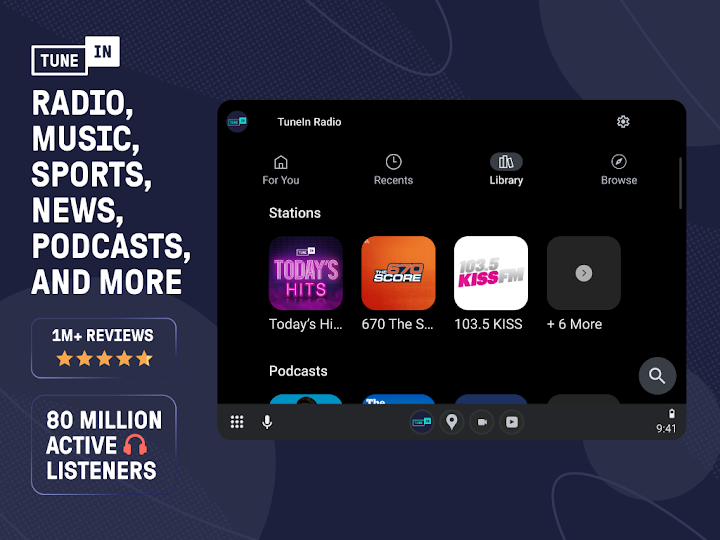
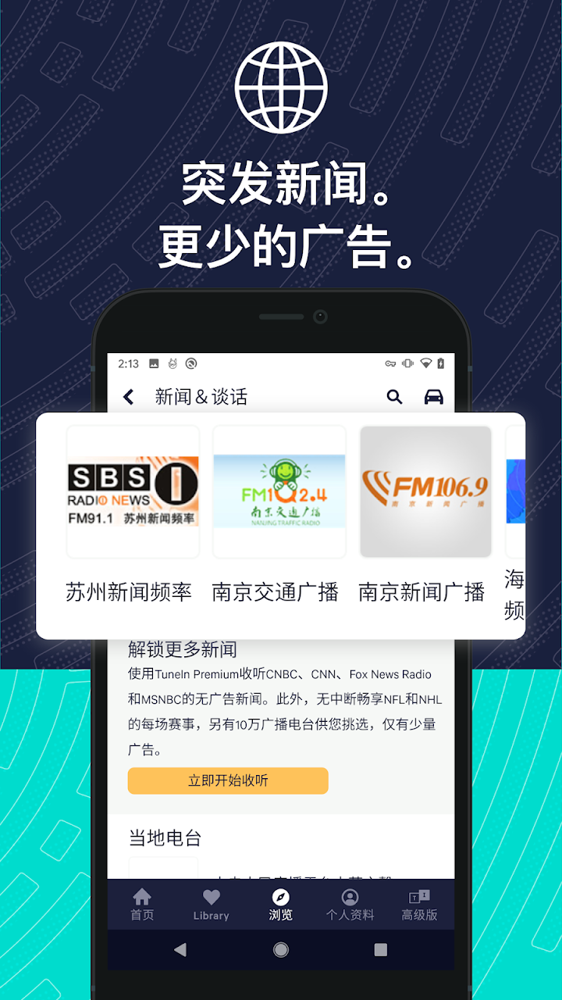

那个下午我在家找 NFL 直播找疯了，最后一台设备一台设备地试
一个周日下午找体育直播的真实经历——从翻有线电视到手机投送再到客厅电视，折腾两小时后才搞清楚全球电台应用 Tunein 的多设备收听姿势，顺便把免费版和 Premium 的广告坑也踩了个遍。
上周日下午两点，我瘫在沙发上刷手机。本来是个没什么事的休息日，直到群里有人开始聊一场 NFL 的季后赛——我突然想起来这场我之前设了提醒，但当时点开提醒看了一眼对阵名单就又把手机扔一边了，忘了开直播。
等反应过来比赛已经开打二十分钟。
我先抓过客厅的有线电视遥控器翻了一圈，本地体育频道那天没给这场分配直播时间，不知道是版权还是排期问题。手机上倒是能搜到一个直播链接，但屏幕太小，用手机播还得攥着，没法在客厅舒服地看。同事上个月在电视上看橄榄球直播用的什么来着？好像提过一个全球电台应用，叫 Tunein，去它的Tunein官网看了一眼发现支持多设备。
我先从官方下载扫了个二维码，手机上装了一个。打开之后界面比想象中干净，首页直接有体育分类，点进去按联赛分组，NFL 那一栏往下滑就是当天所有正在播的赛事。直接点开这场比赛的直播台，声音出来了，但手机屏还是那个老问题——得凑得很近才能看清，扬声器也不够响。
手机上有投送按钮，直接点 Chromecast 就能把音频推到电视上去。我家电视之前投过 Spotify，这步很顺，手机一点电视屏幕立刻亮起来，出来的是 Tunein 的大屏界面。但声音里每隔五六分钟就插一条广告——打断解说节奏的那种音频广告。我之前在手机上听的时候因为戴耳机没太注意，电视扬声器一播就特别明显。
后来去Tunein文档翻了一下才弄明白，Roku 和 Fire TV 这类电视端的情况有点特殊：同一个电台会同时提供「Commercial Free（无广告）」和「Ad supported（含广告）」两个版本，哪怕你已经登录了 Premium 账号，系统也不会自动帮你选无广告的那个，得自己手动在电台页点进去切换版本。我那次投送是从手机端直接进的，没经过电视端的频道商店入口，所以走的是含广告的版本。
还有个细节我踩了个不大不小的坑——我之前在手机上开了免费版，以为广告是所有版本都没法去掉的，后来才知道平台广告和电台自带的广告是两回事。免费版的广告是平台插的，订阅 Premium 之后这部分会完全去掉，但电台节目里本身的当地广告——比如美国本地电台播的汽车广告——这个不管什么版本都去不掉，属于内容本身的一部分，不是 Tunein 能控制的。
那天折腾下来，相当于把这个应用的多设备链路从手机、投送、电视端入口走了一遍。说真的，如果一开始就知道电视端要手动选无广告版本，也不会被广告打断那么多次。不过后来我把常听的那几个体育解说台收藏了，开赛之前二十分钟手机会自动弹提醒，点一下就能直接进直播，比那天现场找方便多了。

后来我又在 Xbox 上试了一次。主机商店里直接搜就能装，界面和电视端差不多，也是遥控器操作，大屏适配好，收藏列表也能同步过去。其实如果不是特意要折腾，直接在主机上装应用、登录账号、收藏好常听的台，开赛提醒来了点一下就进，是最省事的客厅收听姿势。
那台手机现在反过来用得少了——通勤路上偶尔听一档体育谈话台复盘前一天的比赛，或者上下班堵在高架上的时候搜一下 NPR 的新闻谈话当背景音。新闻谈话那一块分三种形态，纯滚动新闻台、有主持人和固定档期的谈话节目、还有录播的播客单集，三种听感完全不一样，通勤场景我一般选谈话节目，时长匹配，不像纯新闻那样五分钟一条刷得太快。

那次之后我才意识到全球电台这个概念有多好用——之前找体育直播和外文新闻，不是在各平台跳来跳去就是被地域版权卡死，现在一个应用基本能覆盖常听的几个场景。当然免费版的广告确实烦，Premium 的无广告体验值不值那个钱看个人使用频率，但至少得先搞清楚哪些广告能去、哪些不能去，不然订阅了也会觉得「好像没少多少广告」。
整套资料在GitHub、Gitee 和 GitCode 三个仓库都能拿到，搜索「APK」加分类就能找到 Tunein 对应的目录，文档里把各设备端的入口、广告问题、订阅权益都写得挺细。